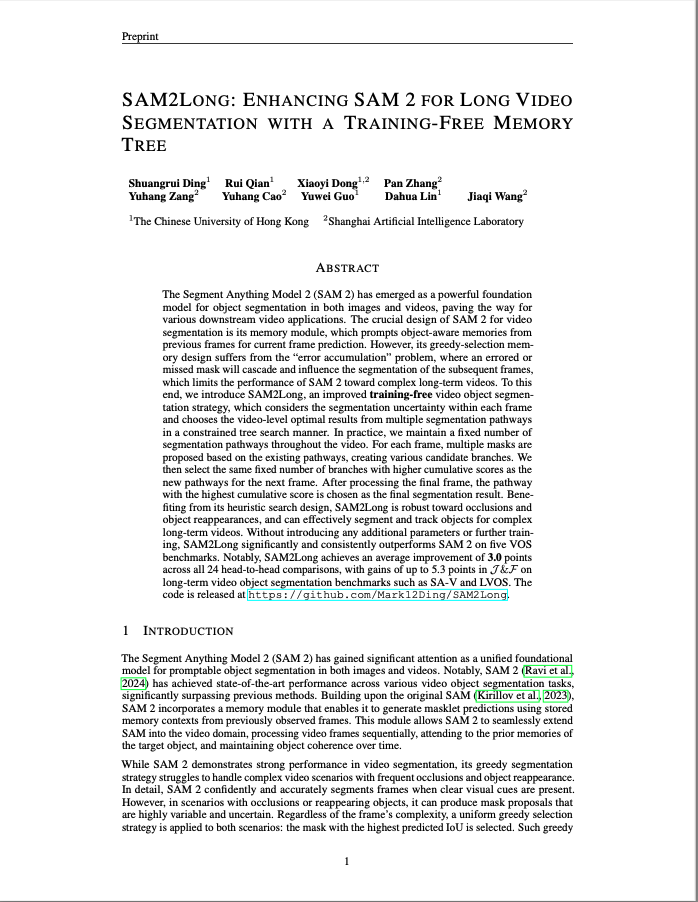

SAM2Long: Enhancing SAM 2 for Long Video Segmentation with a Training-Free Memory Tree
Shuangrui Ding, Rui Qian, Xiaoyi Dong, Pan Zhang, Yuhang Zang, Yuhang Cao, Yuwei Guo, Dahua Lin, Jiaqi Wang. ICCV 2025.
BibTeX
@inproceedings{ding2025sam2long,
title={SAM2Long: Enhancing SAM 2 for Long Video Segmentation with a Training-Free Memory Tree},
author={Ding, Shuangrui and Qian, Rui and Dong, Xiaoyi and Zhang, Pan and Zang, Yuhang and Cao, Yuhang and Guo, Yuwei and Lin, Dahua and Wang, Jiaqi},
booktitle={ICCV},
year={2025}
}